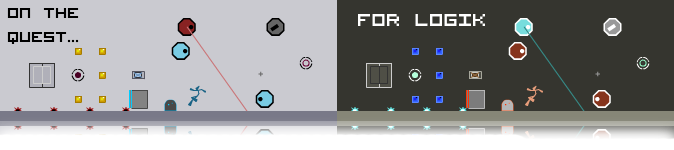

Well, here it is. Under cover, Condog, pepi321, notkitt, and I have been working on this map pack. It consists of 40 whoppin' maps. 2 episodes by each of us.
I would like to thank all the guys that helped out with this for participating. 'twas a great effort.
This map pack isn't for the faint of heart. It's not too easy. Try for an AGD, and it will hold a challenge. We spent a while on this and this outcome has surpassed our expectations.
Comments on this pack would be greatly appreciated.
We hope you enjoy Logik Quest.


 But, I'd like to see what people think of my all gold on Against the Grain, which isn't on NUMA. This kind of map is really my least favorite, but I'm not exactly sure why. Maybe its the level of difficulty, it took me a couple days to beat this one. Anyways, here it is.
But, I'd like to see what people think of my all gold on Against the Grain, which isn't on NUMA. This kind of map is really my least favorite, but I'm not exactly sure why. Maybe its the level of difficulty, it took me a couple days to beat this one. Anyways, here it is.  Holy shizz, that was intense! There were tonnes of close calls in that, and i thought you weren't going to make it. Kudos to you on that one.
Holy shizz, that was intense! There were tonnes of close calls in that, and i thought you weren't going to make it. Kudos to you on that one.  I'll put a few more of mine onto NUMA then. Just for you.
I'll put a few more of mine onto NUMA then. Just for you.  I honestly thought I was gonna die right at the exit myself. I'd gotten to that last cluster of gold two or three times before, but hadn't quite figured out how to get to the end. Feel free to stick that demo on as an example when you post that level, just credit please.
I honestly thought I was gonna die right at the exit myself. I'd gotten to that last cluster of gold two or three times before, but hadn't quite figured out how to get to the end. Feel free to stick that demo on as an example when you post that level, just credit please.